PowerBI对接FusionInsight¶
适用场景¶
Power BI 2.75.5649.861 ↔ FusionInsight HD 6.5 (Hive/Spark2x/FTP-Server)
Power BI 2.75.5649.861 ↔ FusionInsight MRS 8.0 (Hive/FTP-Server/Hetu/ClickHouse)
简介¶
准备工作¶
-
登录FusionInsight Manager创建一个“人机”用户，例如：developuser，具体请参见FusionInsight HD产品文档的
管理员指南->系统设置->权限设置->用户管理->创建用户章节。给developuser用户授予所有访问权限，包含但不限于Hive、Spark2x。 -
已完成FusionInsight HD客户端安装，具体请参见FusionInsight HD产品文档的
应用开发指南->安全模式->安全认证->配置客户端文件章节。 -
客户端机器的时间与FusionInsight HD集群的时间要保持一致，时间差小于5分钟。
-
Hive数据库已存在表student：
示例如下：
CREATE TABLE IF NOT EXISTS student(id INT, first_name STRING, last_name STRING, subject_id INT, score FLOAT);
INSERT INTO student VALUES (1,'Tom','Zhang',1,80);
INSERT INTO student VALUES (2,'Sandy','Li',2,75);
INSERT INTO student VALUES (3,'Benny','Chow',3,76);
INSERT INTO student VALUES (4,'Tina','Wang',1,60);
INSERT INTO student VALUES (5,'Tracy','Zhang',1,80);
INSERT INTO student VALUES (6,'Andy','Li',2,79);
INSERT INTO student VALUES (7,'Manson','Chow',3,86);
INSERT INTO student VALUES (8,'Aurora','Wang',1,90);
- 本地已存在Subject.xlsx，内容如下所示：

- 从https://www.microsoft.com/en-us/download/details.aspx?id=58494下载对应操作系统的Power BI Desktop并安装。本文版本为 PBIDesktopSetup_x64.exe。
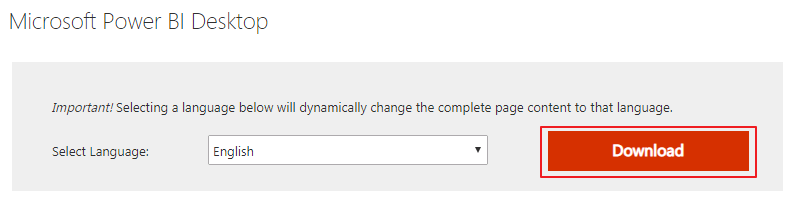
说明：只在本地创建报表，不需要注册账号。如果需要发布报表与他人共享，则需要注册账号。
配置Windows的kerberos认证¶
-
从http://web.mit.edu/kerberos/dist/#kfw-4.0下载对应操作系统架构的MIT Kerberos并安装。本文版本为 kfw-4.1-amd64.msi。
-
设置Kerberos的配置文件。登录FusionInsight Manager的
系统->用户->更多（developuser）->下载认证凭证，下载developuser对应的认证凭证。将krb5.conf文件重命名为 krb5.ini 放在C:\ProgramData\MIT\Kerberos5目录下。
说明：
C:\ProgramData一般属于隐藏文件夹，在“文件夹和搜索选项->查看”中设置“显示隐藏的文件、文件夹或驱动器”或者使用搜索功能即可解决问题。
-
设置Kerberos票据的缓存文件
-
在本地创建存放票据的目录，例如
C:\temp。 -
设置Windows的系统环境变量，变量名为
KRB5CCNAME，变量值为C:\temp\krb5cache。
-
重启机器让新增的环境变量生效。
-
在Windows上进行认证
-
使用上述创建的用户名密码登录，用户名的格式为：用户名@Kerberos域名。
-
打开MIT Kerberos，单击 get Ticket ，在弹出的MIT Kerberos: Get Ticket窗口中，Pricipal 输入用户名
developuser@HADOOP.COM，Password 输入密码，单击 OK。
说明：票据过期后需要重新获取。
配置Hive数据源¶
Power BI中配置Hive数据源，对接Hive的ODBC接口。
-
从https://www.microsoft.com/en-us/download/details.aspx?id=40886下载Microsoft Hive ODBC Driver并安装。本文版本为 HiveODBC64.msi。
-
配置ODBC驱动
-
创建DSN(Data Source Name)：选择 开始 -> Microsoft Hive ODBC Driver -> 64-bit ODBC Administrator。
-
选择 User DSN -> Add -> Microsoft Hive ODBC Driver -> Finish
配置示例如下（其余选项为默认值）：
Data Source Name: ms_hive_odbc，可自定义。 Host(s): 172.16.4.21，Hive Service主节点 Port：21066，Hive Service端口 Database: default Mechanism：Kerberos Host FQDN：hadoop.hadoop.com Service Name：hive Realm：留空 Thrift Transport: SASL SSL Options: 取消勾选“Enable SSL”
说明：Advanced Options不需要进行配置默认的参数即可连接成功。
-
点击 Test 按钮测试连接，如返回“SUCCESS”，则表示ODBC连接Hive成功。

Power BI对接Hive¶
-
Power BI启动后点击 Get data 或者 home->Get Data->More。
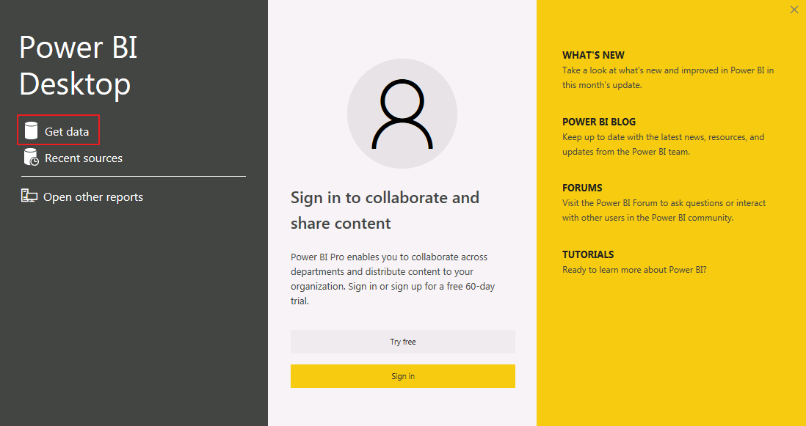
-
在搜索框输入 odbc 后选择 ODBC，点击 Connect。
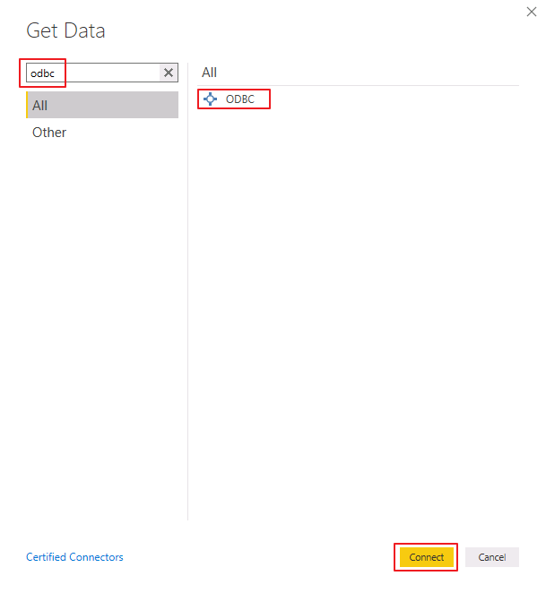
-
“Data source name (DSN)” 选择 ms_hive_odbc，点击 OK。

-
选择 Windows，点击 Connect。

-
勾选 default 数据库的表 student，点击 Load。

-
选择 Data 视图即可预览表的数据。
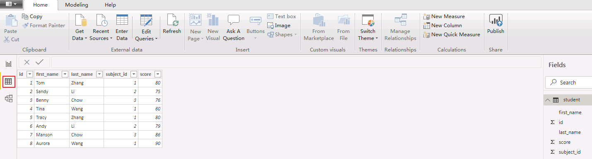
配置Spark数据源¶
-
从https://www.microsoft.com/en-us/download/details.aspx?id=49883下载Microsoft Spark ODBC Driver并安装。本文版本为 SparkODBC64.msi。
-
配置ODBC驱动
-
创建DSN(Data Source Name)：选择 开始 -> Microsoft Spark ODBC Driver -> 64-bit ODBC Administrator。
-
选择 User DSN -> Add -> Microsoft Spark ODBC Driver -> Finish
配置示例如下（其余选项为默认值）：
Data Source Name: ms_spark2x_odbc，可自定义。 Spark Serve Type: SparkThriftServer(Spark1.1 and later) Host(s): 172.16.4.22，Spark2x的JDBCServer2x主节点 Port：22550，为属性hive.sever2.thrift.port的值 Database: default Mechanism：Kerberos Host FQDN：hadoop.hadoop.com Service Name：spark2x Realm：留空 Thrift Transport: SASL SSL Options: 取消勾选“Enable SSL”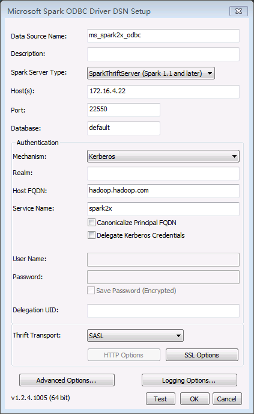
说明：Advanced Options不需要进行配置默认的参数即可连接成功。
-
点击 Test 按钮测试连接，如返回“SUCCESS”，则表示ODBC连接Spark2x成功。

Power BI对接Spark2x¶
Power BI对接Spark2x有两种方式。可以选择通过Spark ODBC对接，或者通过Power BI提供的Spark方式对接。
ODBC¶
-
Power BI启动后，点击 Get data 或者 home->Get Data->More。
-
在搜索框输入 odbc 后选择 ODBC，点击 Connect。
-
“Data source name (DSN)” 选择 ms_spark2x_odbc，点击 OK。

-
选择 Windows，点击 Connect。
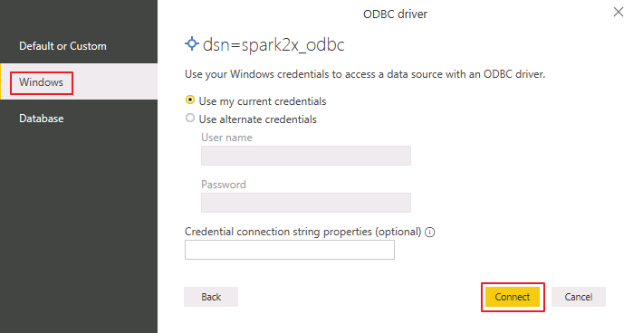
-
勾选 default 数据库的表 student，点击 Load。
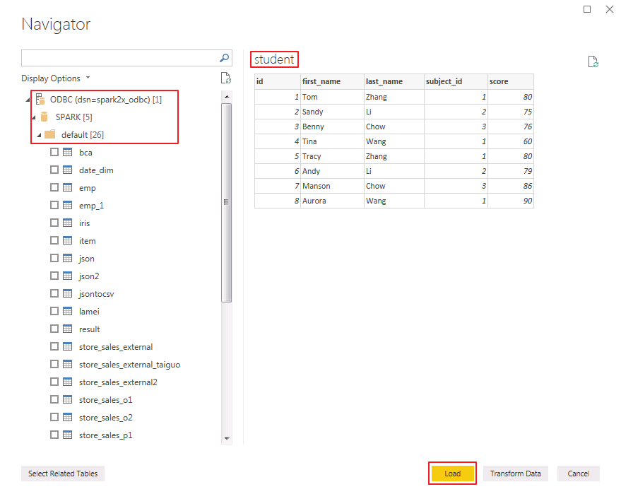
-
选择 Data 视图即可预览表的数据。
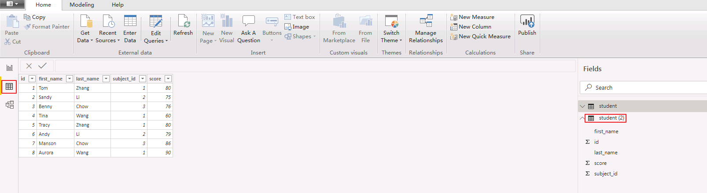
Spark¶
- Power BI启动后，点击 Get data 或者 home->Get Data->More。
- 在搜索框输入 spark 后选择 Spark，点击 Connect。

- “Server”输入Spark2x的JDBCServer2x主节点IP，例如 172.16.4.22，“Protocol”选择 Standard，点击 OK。

- 点击 Windows，选择 Use my current credentials，“Realm”输入 HADOOP.COM，“Host FQDN”输入 hadoop.hadoop.com，“Service Name”输入 spark2x，点击 Connect。

- 勾选表 student，点击 Load。

- 选择 Data 视图即可预览表的数据。
Power BI对接FTP-Server¶
- 登录FusionInsight Manger，修改FTP-Server的配置 ftp-enabled=true 保存后，点击 更多->重启 重启FTP-Server。

- 登录FusionInsight客户端，创建文件powerbi_hdfs.txt并上传至HDFS文件系统。
vi /opt/powerbi_hdfs.txt
hdfs dfs -put /opt/powerbi_hdfs.txt /tmp
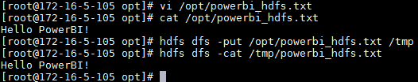
- Power BI启动后，点击 Get data 或者 home->Get Data->More。
- 在搜索框输入 web 后选择 Web，点击 Connect。

- 选择 Basic，“URL”输入 ftp://172.16.4.21:22021/tmp/powerbi_hdfs.txt 。

- 点击 FTP，输入FusionInsight用户名 developuser 和对应的密码，点击 Connect。

- 点击 Load 加载数据。

- 选择 Data 视图即可预览数据。
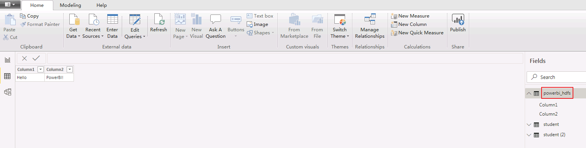
Power BI调整和合并多个数据源。¶
使用Power BI调整和合并从Hive/Spark、Excel导入的多个数据源，输出报表。以下以调整、合并Hive和Excel数据源为例。调整、合并Spark、FTP-Server和Excel数据源操作类似。
-
导入Excel数据源。
-
点击 home->Get Data->Excel 导入本地文件Subject.xlsx。

-
勾选 Subject，点击 Load。
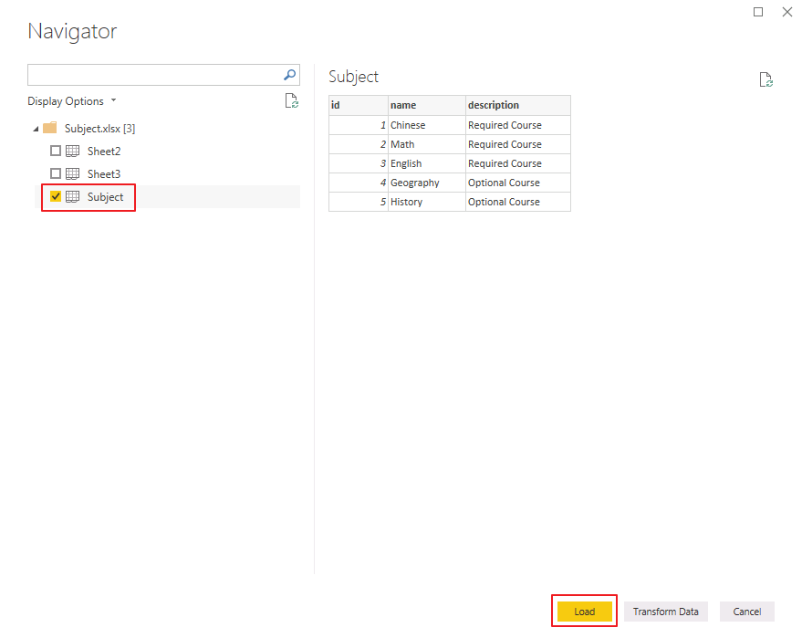
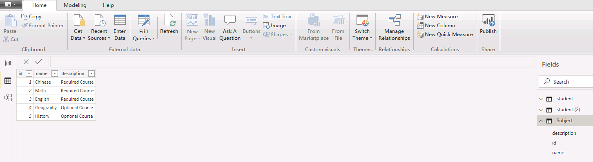
-
点击 home->Edit Queries 进入Power Query编辑器进行调整和组合操作。
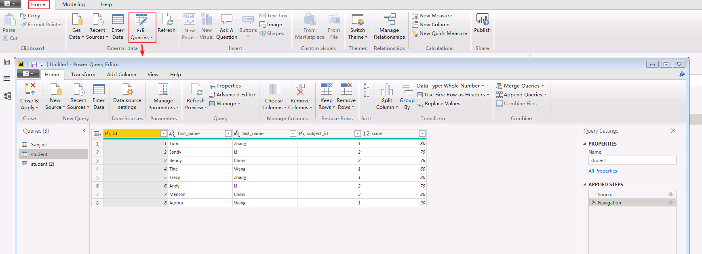
-
合并列： 在Power Query编辑器中，按下Ctrl键选中查询student的first_name和last_name列，然后点击 Transform->Merge Columns 将这两列合并，并命名为 name。


-
合并查询：
- 在Power Query编辑器中，选中查询student，点击 home->Merge Queries，

- 选中 student.subject_id 和 Subject.id，“Join Kind”选择 Left Outer，点击 OK。
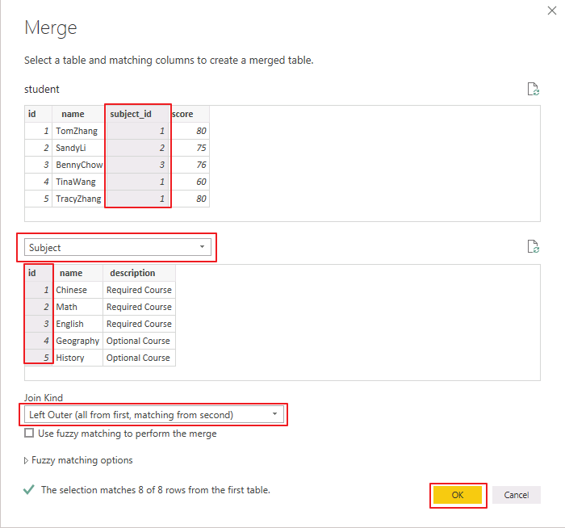
- 点击
 按钮可展开隐藏的列。
按钮可展开隐藏的列。

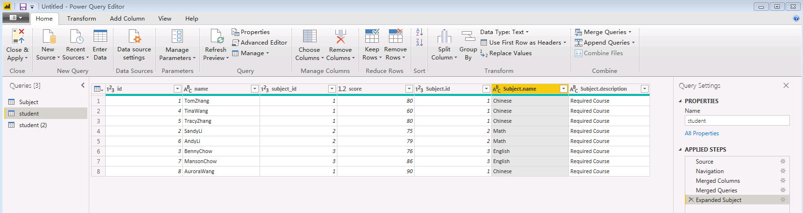
-
删除列： 点击 home->Remove Cloumns 可将不需要的列删除。将id、subject_id、subject.id、subject.description删除。
-
重命名列： 双击列名“subject.name”重命名为“subject_name”。
-
点击 Close & Apply 关闭Power Query编辑器并应用修改。

-
创建报表。选择 报表 视图。依次勾选查询student的 Subject_name、score。“值”选择 Average of score，并点击图表右上角的 ... 按钮选择 Show data。报表显示如下：
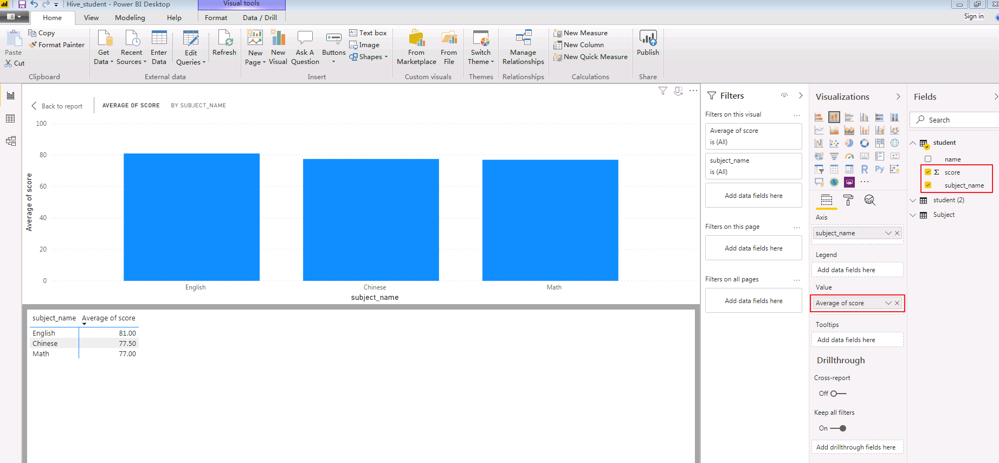
Hetu对接¶
odbc配置¶
- 安装hetu-odbc-win64.msi
安装地址：https://openlookeng.io/download.html
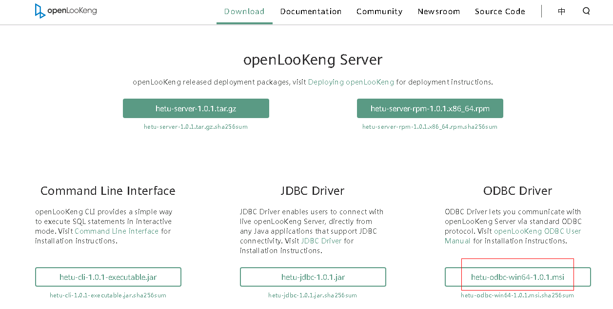
下载完成后，双击安装，选默认配置即可，一直next，直到finish
-
配置数据源驱动
-
先停止自动启动的odbc服务
a. 以管理员身份进入
C:\Program Files\openLooKeng\openLooKeng ODBC Driver 64-bit\odbc_gateway\mycat\bin目录b. 执行启动停止自动启动命令:
mycat.bat stop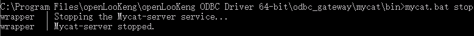
注意： 需要以管理员身份启动cmd，到相应路径执行stop命令，否则会报拒绝访问的错误
-
替换hetu的jdbc驱动
a. 从HETU客户端获取驱动jar包，比如 presto-jdbc-316-hw-ei-302002.jar
b. 将presto-jdbc-316-hw-ei-302002.jar 拷贝到
C:\Program Files\openLooKeng\openLooKeng ODBC Driver 64-bit\odbc_gateway\mycat\lib目录下，并删除该目录下之前的hetu-jdbc-1.0.1.jar包 -
准备hetu对接配置文件
a. 从Manager获取对接用户user.keytab以及krb5.conf文件
b. 使用WinSCP工具以omm用户登录FusionInsight Hetu集群中部署了HSBroker角色的节点，进入
${BIGDATA_HOME}/FusionInsight_Hetu_8.0.2.1/xxx_HSBroker/etc/目录，下载“jaas-zk.conf”和“hetuserver.jks”文件到本地c. 参考如下修改jaas-zk.conf文件，keyTab为访问HetuEngine用户的keytab文件路径
- 编辑ODBC的wrapper.conf配置Client { com.sun.security.auth.module.Krb5LoginModule required useKeyTab=true keyTab="C:/hetu/user.keytab" principal="developuser@HADOOP.COM" useTicketCache=false storeKey=true debug=true; };进入
C:\Program Files\openLooKeng\openLooKeng ODBC Driver 64-bit\odbc_gateway\mycat\conf目录下，编辑wrapper.conf文件增加JVM参数：
wrapper.java.additional.13=-Djava.security.auth.login.config=C:\\hetu\\jaas-zk.conf wrapper.java.additional.14=-Djava.security.krb5.conf=C:\\hetu\\krb5.conf wrapper.java.additional.15=-Dzookeeper.auth.type=kerberos wrapper.java.additional.16=-Dzookeeper.server.principal= zookeeper/hadoop.hadoop.com wrapper.java.additional.17=-Dzookeeper.sasl.clientconfig=Client -
编辑ODBC的server.xml
进入
C:\Program Files\openLooKeng\openLooKeng ODBC Driver 64-bit\odbc_gateway\mycat\conf目录下，编辑server.xml中的协议前缀。将server.xml文件中属性值
jdbc 修改为 //
//jdbc:presto:// 
-
准备jdbc连接配置文件jdbc_param.properties：
新建jdbc_param.properties文件，并添加如下内容进行配置
说明：当前登录方式采用keytab方式登录，如果使用用户名/密码方式登录，则解开password注释，同时注释KerberosKeytabPath参数项。#注意事项： #1、文件路径分隔符请使用"\\"或“/” #关键字列表如下： # url: “<catalog>”、"<schema>" 分别是JDBC客户端要连接的catalog和schema名称。“<zkNode_IP>:<zkNode_Port>”是ZooKeeper的URL，多个URL以逗号隔开。例如：“192.168.81.37:24002,192.168.195.232:24002,192.168.169.84:24002”。样例：jdbc:presto://<zkNode1_IP>:<zkNode1_Port>,<zkNode2_IP>:<zkNode2_Port>,<zkNode3_IP>:<zkNode3_Port>/<catalog>/<schema>?serviceDiscoveryMode=zooKeeper&zooKeeperNamespace=hsbroker # user: 访问数据库用户名 # password: 访问数据库密码 # : # : # : user=developuser #password=123456 # SOCKS 代理服务器，如 localhost:1080 #socksProxy # HTTP 代理服务器地址，如 localhost:8888 #httpProxy # 要附加到任何指定的ApplicationName客户端信息属性的前辍，该属性用于设置Presto查询的源名称，如果既未设置此属性也未设置ApplicationName，则查询的源将为presto-jdbc #applicationNamePrefix # 基于令牌的身份验证令牌 #accessToken # 是否使用HTTPS连接，默认false SSL=true # Java Keystore文件路径 #SSLKeyStorePath # Java KeyStore密码 #SSLKeyStorePassword # Java TrustStore文件路径，SSLTrustStorePath=path，path里的路径分隔符使用"\\"或"/" SSLTrustStorePath=C:\\hetu\\hetuserver.jks SSLTrustStorePassword=Changeme_123 # Java TrustStore密码 #SSLTrustStorePassword # Kerberos服务名称，固定为HTTP KerberosRemoteServiceName=HTTP # Kerberos principal，KerberosKeytabPath指定的keytab对应的用户名 KerberosPrincipal=developuser # 是否使用规范化主机名，默认为false #KerberosUseCanonicalHostname # Coordinator节点Kerberos service principal匹配模式，默认值为 ${SERVICE}@${HOST}。如果启用KerberosUseCanonicalHostname后，${SERVICE} 将替换为KerberosRemoteServiceName 的值，而${HOST}将替换为 coordinator 节点机器的主机名。 KerberosServicePrincipalPattern=${SERVICE}@${HOST} # 访问数据源用户的krb5配置文件，参考准备安全认证获取 KerberosConfigPath=C:\\hetu\\krb5.conf # 访问数据源用户的keytab配置文件，参考准备安全认证获取 KerberosKeytabPath=C:\\hetu\\user.keytab # Kerberos credential 缓存路径 #KerberosCredentialCachePath # 用于连接外部的额外凭据。extraCredentials是键值对的列表，如foo:bar;abc:xyz将创建凭据abc = xyz和foo = bar #extraCredentials # jaas-zk.conf配置文件的路径，用于访问安全模式下的ZooKeeper #java.security.auth.login.config=C:\\hetu\\jaas-zk.conf # krb5配置文件，参考准备安全认证获取 #java.security.krb5.conf=C:\\hetu\\krb5.conf # ZooKeeper的认证方式，安全模式下取值为kerberos #zookeeper.auth.type=kerberos # 指定ZooKeeper服务端principal，配置参数“zookeeper.server.principal”可以确保客户端即使不能从服务端获取服务端principal，也可以成功连接到ZooKeeper服务端。格式为：zookeeper/hadoop.<系统域名的小写>，其中域名为krb5.conf文件中的default_realm字段值 #zookeeper.server.principal=zookeeper/hadoop.hadoop.com # jaas-zk.conf配置文件中的条目名称 #zookeeper.sasl.clientconfig=Client # 用户所属的租户 tenant=default # 只支持on_yarn deploymentMode=on_yarn # 固定为${SERVICE}@${HOST} KerberosServicePrincipalPattern=${SERVICE}@${HOST} -
重启odbc服务 a. 进入
C:\Program Files\openLooKeng\openLooKeng ODBC Driver 64-bit\odbc_gateway\mycat\bin目录b. 执行启动命令
mycat.bat restart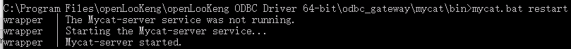
注意：每次修改配置时都需要停止odbc服务，修改完毕后再重启服务。
-
配置数据源连接
在window 系统的控制面板中输入odbc搜索odbc的管理程序，如图：

应用程序中点击 “添加” -> “openLooKeng ODBC 1.1 Driver”-> ”完成”

填写名称和描述

点击Next后，填写URL， 选择JDBC配置文件，填写User Name

172.16.10.131:24002,172.16.10.132:24002,172.16.10.133:24002?serviceDiscoveryMode=zooKeeper&zooKeeperNamespace=hsbroker
- 测试连接：

Power BI配置:¶
成功：


ClickHouse对接¶
准备clickhouse测试数据¶
-
可参考下面部分了解如何创建clickhouse测试数据，如果已有数据可跳过此部分
-
首先查看clickhouseserver实例ip

-
检查测试用户是否有clickhouse的权限

-
登录客户端，登录所有的clickhouseserver，创建表
Kinit developuser 登录第一个clickhouseserver: clickhouse client --host 172.16.5.53 --port 21423 建表：CREATE TABLE ceshi_TinyLog(uid Int64,uname String,wid Int64,word String,pv Int64,click Int64,cost float,date Date,time String) ENGINE=TinyLog; 登录另一个clickhouseserver: clickhouse client --host 172.16.5.52 --port 21423 建表：CREATE TABLE ceshi_TinyLog(uid Int64,uname String,wid Int64,word String,pv Int64,click Int64,cost float,date Date,time String) ENGINE=TinyLog; -
使用命令传数据
clickhouse client -m --host 172.16.5.53 --port 21423 --database="default" --query="insert into default.ceshi_TinyLog FORMAT CSV" < /opt/clickhousenew.csv clickhouse client -m --host 172.16.5.52 --port 21423 --database="default" --query="insert into default.ceshi_TinyLog FORMAT CSV" < /opt/clickhousenew.csv样例数据clickhousenew.csv
27,花信风,22,图片,6,0,568.1720730083482,2020-03-16,10:07:01 38,侯振宇,3,官网,4,8,539.9461401800766,2020-03-23,18:11:31 31,韩浩月,9,儿童,5,3,473.69330165688615,2020-04-14,00:43:02 61,恭小兵,10,阅读网,5,9,694.1459730283839,2020-04-03,23:17:17 0,李公明,13,全集观看,18,10,837.9050944474849,2020-04-22,08:35:21 74,傅光明,3,官网,20,0,526.4335879041444,2020-03-02,02:38:17 63,高远,17,房屋租赁,17,8,487.0733326823028,2020-03-17,03:37:22 8,李轶男,11,查询网,8,3,275.12075933899723,2020-04-03,06:38:30 81,杜仲华,6,查询电话,12,5,90.02009064670109,2020-03-18,11:55:54 65,郭妮,0,网站大全,18,9,840.7250869772428,2020-03-01,21:32:25 15,洁尘,26,六年,11,8,529.7926355483769,2020-04-01,12:05:25 -
clickhouse客户端检查数据：
Kinit developuser
clickhouse client --host 172.16.5.53 --port 21423

获取clickhouse ODBC驱动¶
本文选择1.1.9驱动
- 使用安装好的clickhouse驱动添加一个系统DSN，名字为mrs311
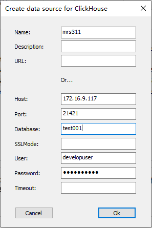
- 打开poweBI,获取数据选择 odbc数据源
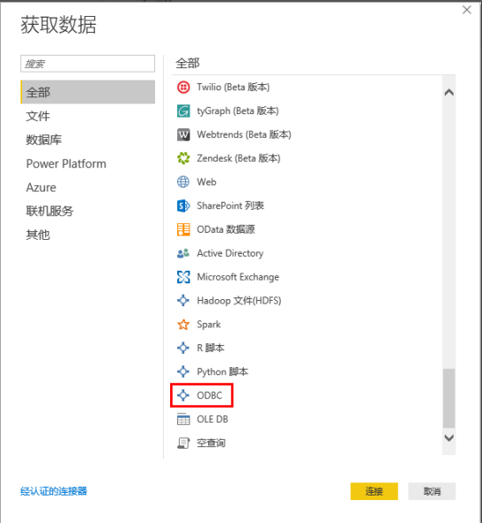
- 选择提前配置好的系统DSN,名字叫mrs311
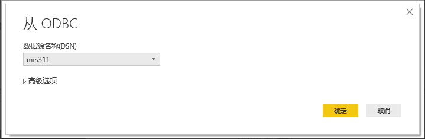
- 填写用户名密码
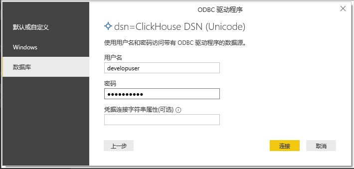
- 点击下一步到测试数据预览
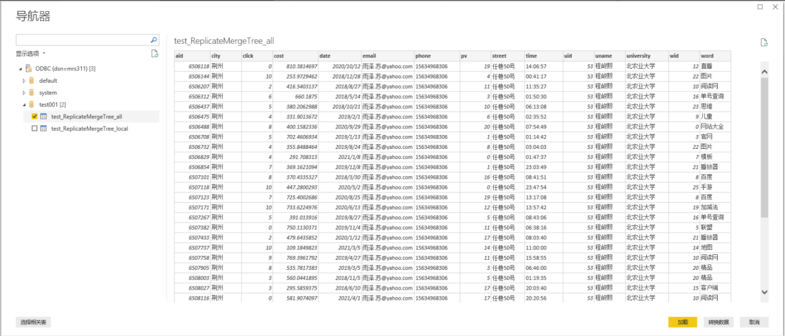
- 测试结果
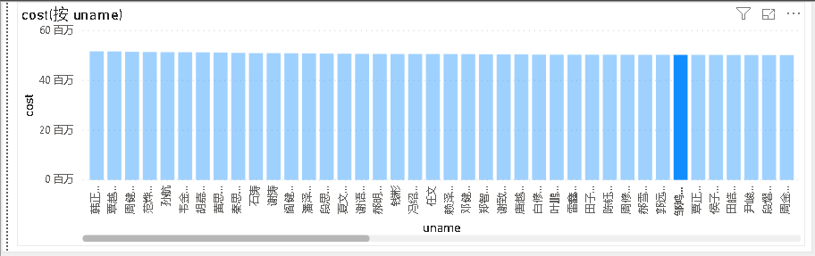